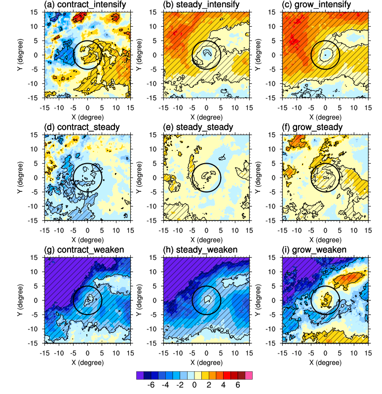

No two tropical cyclones are the same. Sometimes they can have vastly different size and intensity, and both become very destructive. This picture shows an example. Bilis 2006 was large and weak, but brought much water damage; Saomai 2006 was small but strong, and induced a lot of wind damage. To understand tropical cyclones, studying their structural changes is as important as any single parameter.
In Ying and Q.Zhang 2012, we conducted a series of sensitivity experiments using the WRF model to test the response of tropical cyclone structure to changing ambient moisture.
This schematic plot summarizes our findings. Tropical cyclones in overly moist environment tend to become large and weak, while those in dry environment become compact and intense. Vertical wind shear can induce asymmetry in cyclone structure, and when this happens, spatial distribution of moisture becomes a factor. We found that only those air masses to the right hand side of the shear vector have more chance to enter the inner circulation. Therefore, the humidity of these air masses will influence the structural change of the cyclone. More detailed dynamical processes are discussed in the paper.

We performed a complementary statistical analysis using satellite-derived moisture data and tropical cyclone best track data during 2001-2011 over the west Pacific. This figure shows the composite moisture anomalies associated with cyclones categorized into 9 different size and intensity change regimes. Contracting/growing refers to a decrease/increase of size over time and intensify/weaken refers to a increase/decrease in intensity over time. Size is more related to the ambient moisture than intensity. Growing and intensifying cyclones displayed more ambient moisture content, their moisture fields are also more axi-symmetric. The dry air intrusion from the north poses negative impact on TC intensity, while the moisture supply from the south helps TC to intensify.